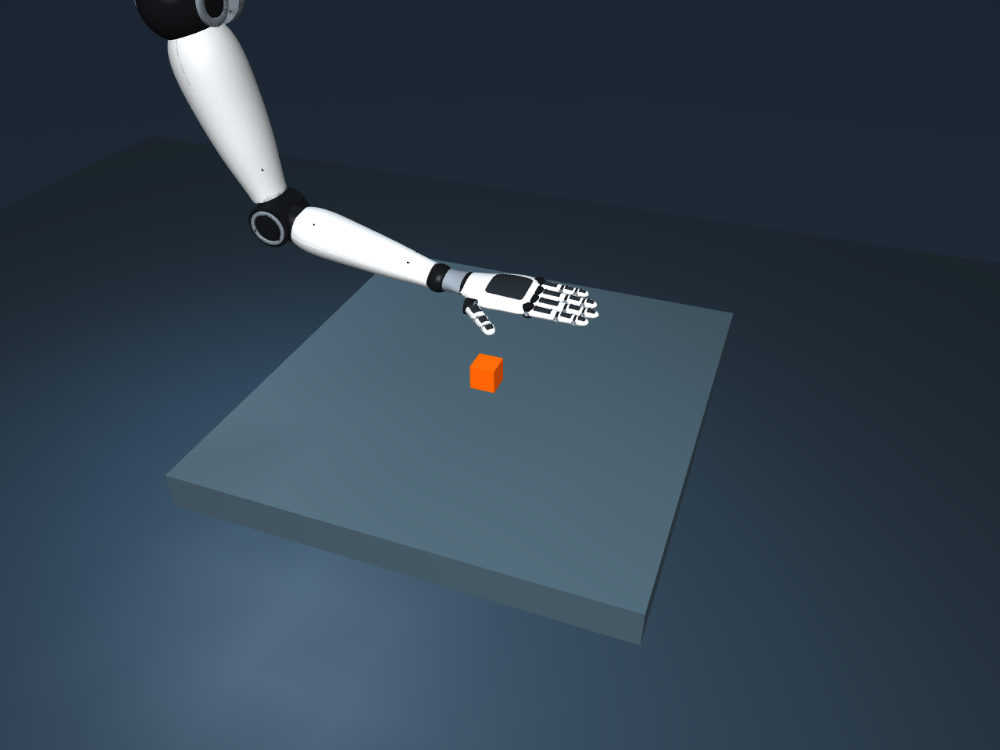

A humanoid arm that reaches,
grasps, lifts, and releases.
Watch the articulated CAD hand working through actual simulated contact, then see the same arm operate from a wheeled base. These recordings show the executed software results and the limits of the tested system.
Simulation onlyOffline presentationThree recorded demonstrationsDrive to the table. Park. Pick up the cube.
One continuous MuJoCo simulation carries the humanoid arm on a free wheeled base. A camera locates the cube after docking; the learned grasp then lifts, holds, sets down, and releases it.
- Wheel drive + lidar map
- Motor-braked parking
- RGB-D cube estimate
- Learned contact grasp
- Lift, hold, release
Minimum retained cube lift across the three combined trials.
Largest measured parked-base drift during manipulation.
27 arm/hand actuators and two physical wheel motors.
Moving fingers produce a real contact grasp.
The exact anatomical CAD surfaces are visible while MuJoCo integrates the arm, fingers, and free object. The recorded 37 mm cube is located from RGB and depth pixels before the approach.
Minimum held-out lift; all ten trials also released onto the table.
Largest translational slip relative to the palm during the hold.
Largest initial RGB-D centre error across six camera trials.
Why this is contact physics
The object remains a free rigid body. Finger contacts and friction retain it as the arm lifts. There is no object weld, mid-pickup teleport, or applied body-force assistance. Joint targets drive rate-limited, effort-bounded actuators; contacts, height, slip, and release are logged.
Rigid convex collision hulls approximate the CAD parts. Contact compliance allows small penetration and joint-limit overshoot; the reports measure these effects. This is not a deformation model of human skin.
What was actually learned
An affine regression was fitted to six successful optimized demonstrations chosen from 42 contact trials. Thirty-six candidates succeeded; six failed. Cube size predicts ten grasp parameters, including palm offset and finger closure.
Approach/lift/release stages and numerical IK are scripted. This is a narrow supervised policy for upright 32–42 mm cubes, not reinforcement learning, a general grasp network, or an end-to-end vision-language-action policy.

ROS 2 messages reached the running simulation.
The interfaces were exercised through actual rclpy / DDS processes, not only inspected as source code.
Arm interface · 23 checks passed
The tests received 27 joint states, RGB JPEG, metric depth, camera calibration, simulation clock, and TF. A trajectory action moved a simulated joint, reported feedback, and handled cancellation. A ROS service triggered the complete learned grasp with measured lift and continuous opposing contacts.
Navigation interface · 6 groups passed
LaserScan, odometry, map, and status messages were received. Velocity commands drove the simulated wheels; the watchdog stopped them. Mission and pose-goal commands reached the physics process, and the navigation TF tree was checked.
The installed Windows ROS runtime is a pinned RoboStack community distribution. Full MoveIt and Nav2 stacks were not installed. A later focused review covered 17 backend/ROS fixture checks and parsed five launch scripts; it is separate from the earlier native end-to-end tests.
A real vision-language run—with its mistakes preserved.
SmolVLM-256M-Instruct ran locally on CPU using the simulated camera image. Its text output had no authority to command motors.
Full scene

In this image we can see a marker, a box and a paper.
Review: the image shows an articulated arm over a table with an orange cube. The model missed the arm and made unsupported marker/paper claims.
Segmented target crop
The object in the image is a cube.
Review: cube shape was identified correctly, but the requested color was omitted. This one crop does not establish reliable scene understanding.
A separate annotated-input experiment also produced inaccurate descriptions. Both raw result files are included.
Model revision: 7e3e67edbbed1bf9888184d9df282b700a323964. The manipulation controller uses deterministic RGB-D segmentation and the fitted grasp policy, not VLM-generated motor actions.
What these results establish
| Area | Executed and evidenced | Boundary |
|---|---|---|
| Humanoid arm | Seven arm axes, twenty hand axes, smooth CAD geometry, articulated physics and camera-guided contact pickup. | Simulated rigid mechanisms; no physical assembly or hardware calibration. |
| Learning | A fitted size-conditioned regression, training failures retained, held-out tests recorded. | Known upright cubes and fixed motion stages; no general VLA or reinforcement policy. |
| Mobile mission | Wheel dynamics, lidar-map docking, motor braking, then mounted-arm pickup in one continuous model. | Heavy base, clear docking lane, ideal base pose for IK; no manipulation while driving. |
| Isaac Sim / Lab | Feasibility reviewed against official requirements. | Not installed or executed: GTX 1660 Ti, 6 GB VRAM, about 15.9 GB RAM, and no RT cores are outside the supported requirements. |
| Jetson / hardware | The requested software-only results run on the available computer. | No physical Jetson or robot is required for this simulation; hardware deployment was not tested. |
Inspect the evidence offline.
Every linked file below is included in this folder. The presentation requires no local server, API, internet connection, software installation, or model weights.
Measured reports and original model answers
- mobile validation
- mobile video trial
- mobile video
- mobile development notes
- grasp training and heldout
- grasp final validation
- grasp camera validation
- grasp training trials summary
- grasp policy
- grasp video
- navigation validation
- navigation ros validation
- navigation media validation
- arm ros validation
- ros runtime probe
- final review
- vlm report
- vlm annotated input experiment
- isaac feasibility.txt
This package is a portable presentation and selected evidence set. The editable CAD, simulation code, ROS runtime, and training environment remain in the main project on D:. The videos are recordings; their playback controls do not operate a live robot or simulator.